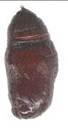

| Home |
| SUNFLOWER |
| 1. Leaf Hopper |
| 2. Capitulum Borer |
| 3. Tobacco Caterpiller |
| 4. Bihar Hairy Caterpiller |
| 5. Semi Looper |
| 6. Cutworms |
| 7. Stink Bug |
| 8. Plant Bug |
| 9. Black Hairy Caterpiller |
| 10. Ash Weevil |
| Questions |
| Download Notes |
PESTS OF SUNFLOWER :: Major Pests :: Bihar Hairy Caterpiller
4. Bihar hairy caterpillar - Spilosoma obliqua (Arctiidae: Lepidoptera)
Distribution and status: Sporadic pest widely distributed in the Orient. It is very serious in Bihar, Madhya Pradesh, Uttar Pradesh and Punjab
Host range: sesamum, mash (Phaseolus mungo), mung (P. aureus), linseed, mustard, sunflower and some vegetables.
Damage symptoms: Defoliation
Bionomics: Adults have crimson coloured body with black dots. Wings pinkish with numerous black spots. Larva is orange coloured with broad transverse bands with tuft of yellow hair that are dark at both end.
 |
||
2nd instar |
3nd instar |
4nd instar |
5nd instar |
6nd instar |
Cocoon |

|
||
Pupa |
Adult |
Adult |
Pest breeds from March to April and again from July to November. Adult female lays 400-1000 light green, spherical eggs in clusters on the underside of the leaves. Egg period 8-13 days. Larval instars 7 and period 30-56 days. Pupation takes place in plant debris or soil and pupal period 7-15 days. Adult lives for 7 days. Early instars are gregarious and later instars disperse in search of food.
Management
1. Dust young caterpillars with malathion 5 D @ 25 kg/ha
2. When full grown chemical control becomes difficult as in the case of red hairy
caterpillar of groundnut.
3. For chemical control measures refer red hairy caterpillar